Seven lines from observations.txt. Four are fixed and evidenced below
and their lines have been removed from the file; three — the negative-coloured NPCs, the
intro text box frame and the frame-type option — are still open and their lines stay in the
file. Captures are raw mGBA frames from tools/playtest/playtest.py against the rebuilt
ROM; close-ups are nearest-neighbour upscales of those same frames.
Still open. Reproduced this round: the lab scientist's head renders in the right colours while the shoulder row comes out in navy, orange and pale blue — the clothing indices, not the skin and hair indices. That is the signature of an NPC palette whose upper half belongs to a different sprite sheet, i.e. the art-from-one-side / palette-from-the-other variant of the Phase 1 merge loss.
Two things were ruled out along the way, and both are worth recording so the next pass does not
redo them. graphics/object_events/palettes/npc_white.pal and npc_4.pal
are byte-identical in this tree and both match scientist.png's own embedded
palette exactly, so gObjectEventGraphicsInfo_Scientist's choice of
OBJ_EVENT_PAL_TAG_NPC_WHITE over OBJ_EVENT_PAL_TAG_NPC_4 cannot by itself
be the fault. And .paletteSlot is vestigial in expansion — palettes are
allocated dynamically by tag — so the PALSLOT_NPC_4 in that struct is not doing
the damage either. A dump of OBJ palette RAM inside the lab found npc_white loaded, intact, in
slot 4. The sprite is therefore being drawn against some other loaded slot, and the
remaining work is to read the scientist sprite's oam.paletteNum at runtime and find
out who put it there.
Capture note: Professor Elm's opening cutscene is not escapable from a fresh save, so every frame of the assistant is partly behind the message box. Getting a clean full-body frame needs the story flags set first.
Still open, carried from D108. The intro path emits
0xFC 0xFD 0xFE×26 0xFF 0x100 as its frame tile run, which matches no frame
function in src/menu.c. Not touched this round.
Still open — and it is a design call, not a defect. Neither
upstream ties the overworld message box to optionsWindowFrameType: Emerald's battle
box reads the option, its field box does not, and CrystalDust's field box is a fixed Gen 2
frame. So "does during battle, does not during dialogue" is faithful to both parents. Making the
field box follow the option is a feature, and wants a decision on whether CrystalDust's frame art
gets the same nine-way set the Emerald frames have before it is worth building.
Change. OW_FOLLOWERS_ENABLED in include/config/overworld.h
flipped to TRUE. Gen 2 is the generation that introduced a walking partner, and
HG/SS — the games this port is dressed as — put the party lead on screen, so followers
off by default reads as missing content rather than as a setting. The neighbouring
OW_FOLLOWERS_BOBBING, OW_FOLLOWERS_POKEBALLS and
OW_FOLLOWERS_SCRIPT_MOVEMENT were already TRUE and were left alone.
Cost. ROM 29,336,816 B (87.43 % of 32 MiB), EWRAM 85.30 %, IWRAM 86.98 %.
Fixed. Bulbasaur, handed over by the debug menu, walking behind the player on Route 30 and outside the Cherrygrove Pokémon Center.
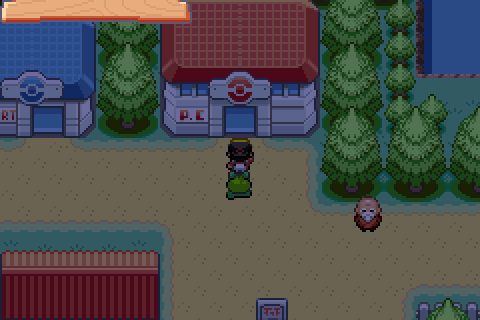
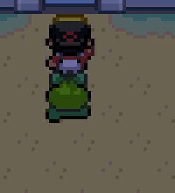
Cause. Gen 2 mixed berry trees and apricorn trees on the same sprite, and
CrystalDust's sFruitTrees[] keeps that: six trees bear apricorns and the rest bear
berries. The tree the player walks up to is drawn as an apricorn tree either way, so a berry
falling out of one reads as a bug rather than as faithfulness.
Change. Per the explicit call in the observation, every entry in
sFruitTrees[] now bears an apricorn. The six trees that already gave apricorns keep
theirs; the rest take the apricorn whose colour matches the berry they used to bear, so the
in-world colour of the fruit does not change:
| was | now | why |
|---|---|---|
| Oran, Rawst | Blue Apricorn | blue fruit |
| Pecha, Persim | Pink Apricorn | pink fruit |
| Cheri, Leppa | Red Apricorn | red fruit |
| Chesto | Green Apricorn | green fruit |
| Aspear | Yellow Apricorn | yellow fruit |
Fixed. The Route 30 tree at (14, 5) —
FRUIT_TREE_ROUTE_30_2, formerly a Pecha Berry — now yields a Pink Apricorn.
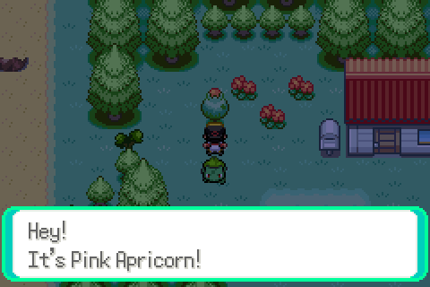
Cause. Three separate faults in src/field_door.c, all of them the same
Phase 1 story — expansion's table survived intact and CrystalDust's did not.
DOOR_SIZE_1x2
(METATILE_General_Door, _Door_PokeCenter, _Door_Gym,
METATILE_BattleFrontier_Door_Elevator,
METATILE_BattleFrontierOutsideEast_Door_BattleTower) while the art that shipped with
them is 16×48, i.e. three 1×1 frames. The animation therefore read two tile rows where
it should read one and painted the second row over the metatile above the door — which is
why the opening swallowed the Poké Ball sign on the Center's facade. Changed to
DOOR_SIZE_1x1.sDoorAnimPalettes_General, _PokeCenter and
_Gym still held Emerald's slot numbers against CrystalDust's General tileset, giving
the teal-and-grey smear in the before shots. Changed to CrystalDust's: 2, 7 and 7.sDoorAnimGraphicsTable[] at all, so New Bark, Elm's lab, Violet, Azalea, Goldenrod and
its department store and elevators, the Radio Tower lifts, Ecruteak, Olivine and its lighthouse,
the Goldenrod Underground, Pallet Town and Fuchsia had no door animation whatsoever. All
twenty-four are restored, with their twenty-two tile arrays and twenty-one palette arrays. The
eight Johto tilesets they key off (gTileset_NewBark …
gTileset_Underground) were defined in
src/data/tilesets/headers.h but never declared in include/tilesets.h
— the orphaned-header variant — so field_door.c could not name them; the
declarations are added.Three of the restored rows had to be given fresh symbol names —
sDoorAnimTiles_GoldenrodDeptStoreElevator,
sDoorAnimPalettes_GoldenrodDeptStoreElevator and
sDoorAnimPalettes_KantoFuchsia — because the names CrystalDust used collide with
symbols that live inside #if IS_FRLG in this file, and this is not an FRLG build.
Fixed. Same script, same frame numbers, two ROMs: left is the tree
with src/field_door.c and include/tilesets.h reverted, right is the
fixed build. Cherrygrove City Pokémon Center, walking north into the door.
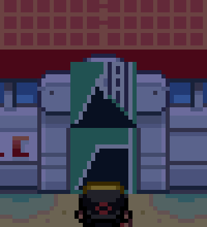
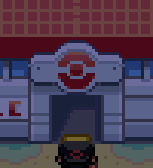
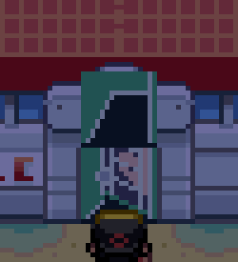
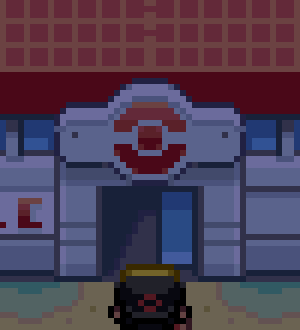
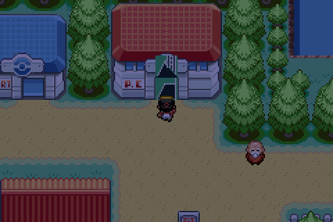
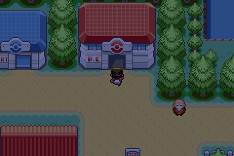
It is not a crash. The game keeps running, the nurse finishes her animation, the party is healed and the player can walk away. What stops is text: from the moment the heal completes, every message box in the save comes up empty.
Cause. A new instance of the merge's uninitialised-buffer class — a buffer whose initialiser moved behind a guard.
static EWRAM_DATA u8 sUnionRoomPlayerName[12] = {};
Emerald zero-filled that buffer and relied on InitUnionRoom() to write the
EOS before anything read it. CrystalDust's nurse (D48) only calls
InitUnionRoom() when a wireless adapter is connected, so on a normal single-player
save the buffer was still twelve zero bytes — not a terminated string — when the nurse
ran specialvar VAR_RESULT, BufferUnionRoomPlayerName after healing. (It gets there
because ShouldCheckForUnionRoom() returns TRUE —
OW_UNION_DISABLE_CHECK is FALSE and
OW_FLAG_MOVE_UNION_ROOM_CHECK is 0 — and because
PlayerNotAtTrainerHillEntrance() returns TRUE outside Trainer Hill, so the script
falls through to the second specialvar.)
The StringCopy in BufferUnionRoomPlayerName then ran off the end of
the buffer hunting for an EOS and wrote the overrun into
gStringVar1, whose 256 bytes are followed in EWRAM by
sFirstTextPrinter, gTextFlags, gDisableTextPrinters and
gFonts:
| symbol | address |
|---|---|
gStringVar1 | 0x02035F3C |
sFirstTextPrinter | 0x0203603C |
gTextFlags | 0x02036040 |
gDisableTextPrinters | 0x02036044 |
gFonts | 0x02036048 |
gFonts ended up NULL, AddTextPrinter bailed out of every subsequent
message, and the dialogue box came up permanently blank. Traced live — opcode 38 is
ScrCmd_specialvar:
game: HPP enter gFonts=08D5A68C cnt=1 game: HPP exit gFonts=08D5A68C game: SCR cmd 38 nulled gFonts game: FMB A gF=00000000 game: ATP no gFonts
Ruled out before that trace landed: the movement action tables, sAnimTable_Nurse
and ANIM_NURSE_BOW, MovementAction_NurseJoyBowDown_Step0,
FreezeObjectEvent, the heal field effect itself, text speed and instant render,
text-printer heap exhaustion, DeactivateAllTextPrinters, the nurse
.inc, TrySpawnNamebox/PrepareNamebox,
ContextNpcGetTextColor and HealPlayerParty.
Change. Start the buffer terminated, and re-terminate defensively on each read:
static EWRAM_INIT u8 sUnionRoomPlayerName[12] = { EOS };
...
sUnionRoomPlayerName[ARRAY_COUNT(sUnionRoomPlayerName) - 1] = EOS;
if (sUnionRoomPlayerName[0] != EOS)
{
StringCopy(gStringVar1, sUnionRoomPlayerName);
Fixed. Same script, same frame, before and after.
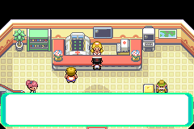
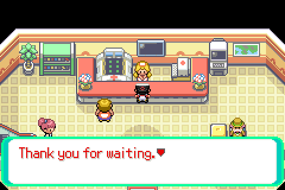